<!DOCTYPE html>
<html lang="de">
<head>
  <meta charset="UTF-8">
  <meta name="viewport" content="width=device-width, initial-scale=1.0">
  <title>Claude Cowork Deep Dive - Selbstlernkurs · Marit Alke</title>
  <link href="https://fonts.googleapis.com/css2?family=Open+Sans:wght@400;600;700&display=swap" rel="stylesheet">
  <style>
    @font-face { font-family:'PT Sans'; font-style:normal; font-weight:400; font-display:swap; src:url('fonts/subset-PTSans-Regular.woff2') format('woff2'); }
    @font-face { font-family:'PT Sans'; font-style:italic; font-weight:400; font-display:swap; src:url('fonts/subset-PTSans-Italic.woff2') format('woff2'); }
    @font-face { font-family:'PT Sans'; font-style:normal; font-weight:700; font-display:swap; src:url('fonts/subset-PTSans-Bold.woff2') format('woff2'); }
    @font-face { font-family:'PT Sans'; font-style:italic; font-weight:700; font-display:swap; src:url('fonts/subset-PTSans-BoldItalic.woff2') format('woff2'); }
  </style>
  <script src="https://unpkg.com/react@18.3.1/umd/react.development.js" integrity="sha384-hD6/rw4ppMLGNu3tX5cjIb+uRZ7UkRJ6BPkLpg4hAu/6onKUg4lLsHAs9EBPT82L" crossorigin="anonymous"></script>
  <script src="https://unpkg.com/react-dom@18.3.1/umd/react-dom.development.js" integrity="sha384-u6aeetuaXnQ38mYT8rp6sbXaQe3NL9t+IBXmnYxwkUI2Hw4bsp2Wvmx4yRQF1uAm" crossorigin="anonymous"></script>
  <script src="https://unpkg.com/@babel/standalone@7.29.0/babel.min.js" integrity="sha384-m08KidiNqLdpJqLq95G/LEi8Qvjl/xUYll3QILypMoQ65QorJ9Lvtp2RXYGBFj1y" crossorigin="anonymous"></script>
  <script src="assets/image-slot.js"></script>
  <style>
    * { box-sizing: border-box; margin: 0; padding: 0; }
    html { scroll-behavior: smooth; }
    body { background: #fff; font-family: 'PT Sans', sans-serif; -webkit-font-smoothing: antialiased; }
    a { text-decoration: none; }
    .cta-btn { transition: background-color .2s ease, box-shadow .2s ease; }
    .cta-btn:hover { background: var(--hov) !important; box-shadow: 0 10px 26px rgba(0,0,0,0.18) !important; }

    .banner-compact { padding: clamp(14px, 2vw, 22px) 32px !important; }
    .fit-negative-border { border: 1.5px solid #ffb000 !important; }
    .fit-negative-border li span:first-child { background: transparent !important; border: 1.5px solid #ffb000 !important; color: #ffb000 !important; }
    .grid-cap { display: grid; grid-template-columns: repeat(4, 1fr); gap: 20px; }
    .grid-formats-5 { display: grid; grid-template-columns: repeat(auto-fit, minmax(300px, 1fr)); gap: 22px; }
    .grid-fit { display: grid; grid-template-columns: 1fr 1fr; gap: 24px; align-items: start; }
    .grid-quotes { display: grid; grid-template-columns: 1fr 1fr; gap: 24px; }
    .grid-quotes-3 { display: grid; grid-template-columns: repeat(3, 1fr); gap: 24px; }
    .about-grid { display: grid; grid-template-columns: 4fr 7fr; gap: clamp(32px, 5vw, 64px); align-items: center; }
    .stat-row { display: flex; justify-content: center; gap: clamp(20px, 4vw, 48px); flex-wrap: wrap; }
    .stat-num { font-family: 'Open Sans', sans-serif; font-weight: 700; font-size: clamp(1.6rem, 3vw, 2.1rem); color: #00b3c3; line-height: 1; }
    .stat-label { font-family: 'PT Sans', sans-serif; font-size: 14px; color: #7b7b7b; margin-top: 4px; }
    @media (max-width: 680px) { .about-marit-img { width: 140px !important; } }

    @media (max-width: 920px) {
      .grid-cap { grid-template-columns: repeat(2, 1fr); }
      .grid-fit, .grid-quotes, .grid-quotes-3 { grid-template-columns: 1fr; }
      .about-grid { grid-template-columns: 1fr; }
      .br-wide { display: none; }
      .grid-extras { grid-template-columns: 1fr !important; }
    }
    @media (max-width: 540px) {
      .grid-cap { grid-template-columns: 1fr; }
    }

    /* ── Animations ─────────────────────────────────────────── */

    /* Parallax hero */
    .hero-bg {
      will-change: background-position;
    }

    /* Fade-in + slide-up on scroll */
    .reveal {
      opacity: 0;
      transform: translateY(28px);
      transition: opacity 0.6s ease, transform 0.6s ease;
    }
    .reveal.visible {
      opacity: 1;
      transform: translateY(0);
    }

    /* Staggered children */
    .reveal-stagger > * {
      opacity: 0;
      transform: translateY(22px);
      transition: opacity 0.5s ease, transform 0.5s ease;
    }
    .reveal-stagger.visible > *:nth-child(1) { opacity: 1; transform: none; transition-delay: 0.05s; }
    .reveal-stagger.visible > *:nth-child(2) { opacity: 1; transform: none; transition-delay: 0.12s; }
    .reveal-stagger.visible > *:nth-child(3) { opacity: 1; transform: none; transition-delay: 0.19s; }
    .reveal-stagger.visible > *:nth-child(4) { opacity: 1; transform: none; transition-delay: 0.26s; }
    .reveal-stagger.visible > *:nth-child(5) { opacity: 1; transform: none; transition-delay: 0.33s; }
    .reveal-stagger.visible > *:nth-child(6) { opacity: 1; transform: none; transition-delay: 0.40s; }
    .reveal-stagger.visible > *:nth-child(7) { opacity: 1; transform: none; transition-delay: 0.47s; }
    .reveal-stagger.visible > *:nth-child(8) { opacity: 1; transform: none; transition-delay: 0.54s; }

    /* Card hover lift */
    .card-hover {
      transition: transform 0.22s ease, box-shadow 0.22s ease;
    }
    .card-hover:hover {
      transform: translateY(-5px);
      box-shadow: 0 14px 32px rgba(0,0,0,0.13) !important;
    }

    /* CTA pulse */
    @keyframes pulse-teal {
      0%, 100% { box-shadow: 0 6px 18px rgba(0,0,0,0.12), 0 0 0 0 rgba(0,179,195,0.35); }
      50%       { box-shadow: 0 6px 18px rgba(0,0,0,0.12), 0 0 0 9px rgba(0,179,195,0); }
    }
    @keyframes pulse-orange {
      0%, 100% { box-shadow: 0 6px 18px rgba(0,0,0,0.12), 0 0 0 0 rgba(255,176,0,0.40); }
      50%       { box-shadow: 0 6px 18px rgba(0,0,0,0.12), 0 0 0 9px rgba(255,176,0,0); }
    }
    .cta-pulse-teal   { animation: pulse-teal   2.6s ease-in-out infinite; }
    .cta-pulse-orange { animation: pulse-orange 2.6s ease-in-out infinite; }
  </style>
</head>
<body>
<script type="text/babel">
// components.jsx — Claude Cowork Deep Dive · Selbstlernkurs
// Forked & extended from the Marit Alke UI Kit. Asset paths point at ./assets.

const C = {
  orange:  '#ffb000',
  teal:    '#00b3c3',
  lime:    '#a4c931',
  heading: '#3a3a3a',
  text:    '#5a5a5a',
  mid:     '#7b7b7b',
  navy:    '#03557f',
  bgLight: '#f7f8f5',
  white:   '#ffffff',
};
const HEAD = "'Open Sans', sans-serif";
const BODY = "'PT Sans', sans-serif";
const CHECKOUT = 'https://copecart.com/products/c619e3c2/checkout';
const ICON = (n) => `assets/icons/${n}`;

/* ── Layout primitives ─────────────────────────────────────── */
const Section = ({ children, bg = 'white', max = 1040, pad, id }) => {
  const background = bg === 'gray' ? C.bgLight : bg === 'soft' ? 'rgba(0,179,195,0.07)' : C.white;
  return (
    <section id={id} style={{ background, padding: pad || 'clamp(64px, 9vw, 108px) 24px' }}>
      <div style={{ maxWidth: max, margin: '0 auto' }}>{children}</div>
    </section>
  );
};

const Divider = ({ height = 12 }) => (
  <div style={{ height, background: C.orange, width: '100%' }} />
);

const Eyebrow = ({ children, color = C.teal, center = false }) => (
  <div style={{
    fontFamily: HEAD, fontSize: 13, fontWeight: 700,
    letterSpacing: '0.16em', textTransform: 'uppercase', color,
    marginBottom: 16, textAlign: center ? 'center' : 'left',
  }}>{children}</div>
);

const H2 = ({ children, center = true, style }) => (
  <h2 style={{
    fontFamily: HEAD, fontWeight: 700,
    fontSize: 'clamp(1.7rem, 3.4vw, 2.6rem)', color: C.heading,
    lineHeight: 1.18, textAlign: center ? 'center' : 'left',
    textWrap: 'pretty', margin: 0, ...style,
  }}>{children}</h2>
);

const Lead = ({ children, center = false, style }) => (
  <p style={{
    fontFamily: BODY, fontSize: 'clamp(1.2rem, 1.4vw, 1.375rem)', color: C.text,
    lineHeight: 1.75, textAlign: center ? 'center' : 'left',
    textWrap: 'pretty', margin: 0, ...style,
  }}>{children}</p>
);

const SectionBanner = ({ children }) => (
  <div style={{
    background: C.orange, color: C.white, textAlign: 'center',
    padding: 'clamp(26px, 4vw, 40px) 32px',
    fontFamily: HEAD, fontWeight: 600,
    fontSize: 'clamp(1.4rem, 2.6vw, 2rem)', lineHeight: 1.2,
  }}>{children}</div>
);

/* ── Buttons (anchors → checkout) ──────────────────────────── */
const CtaButton = ({ children, variant = 'teal', href = CHECKOUT, full = false, big = false }) => {
  const bg = { teal: C.teal, orange: C.orange }[variant] || C.teal;
  const hov = variant === 'teal' ? C.orange : C.teal;
  const pulseClass = variant === 'teal' ? 'cta-pulse-teal' : 'cta-pulse-orange';
  const isAnchor = href.startsWith('#');
  return (
    <a href={href} target={isAnchor ? undefined : '_blank'} rel={isAnchor ? undefined : 'noopener'}
      className={`cta-btn ${pulseClass}`}
      style={{
        fontFamily: BODY, fontWeight: 700, fontSize: big ? 21 : 20,
        background: bg, color: C.white, border: 'none', borderRadius: 6,
        padding: big ? '17px 40px' : '14px 34px', cursor: 'pointer',
        display: full ? 'block' : 'inline-block', textAlign: 'center',
        textDecoration: 'none', width: full ? '100%' : 'auto',
        ['--hov']: hov,
      }}>{children}</a>
  );
};

/* ── Nav ───────────────────────────────────────────────────── */
const Nav = () => (
  <nav style={{
    background: C.white, display: 'flex', alignItems: 'center',
    justifyContent: 'space-between', padding: '16px clamp(20px, 4vw, 44px)',
    maxWidth: 1280, margin: '0 auto',
  }}>
    
    <a href="https://marit-alke.de" target="_blank" rel="noopener" style={{
      fontFamily: HEAD, fontWeight: 600, fontSize: 14, color: C.heading,
      textDecoration: 'none', borderBottom: `2px solid ${C.orange}`, paddingBottom: 2,
    }}>Zur Website →</a>
  </nav>
);

/* ── Hero ──────────────────────────────────────────────────── */
const Hero = () => (
  <header>
    <Divider height={4} />
    <div style={{
      position: 'relative',
      backgroundImage: "url('assets/hero-header-insel-tuerkis.jpg')",
      backgroundSize: 'cover', backgroundPosition: 'center 58%',
      minHeight: 'clamp(580px, 84vh, 780px)',
      display: 'flex', alignItems: 'center', justifyContent: 'center',
    }}>
      <div style={{
        position: 'absolute', inset: 0,
        background: 'radial-gradient(ellipse at 50% 44%, rgba(0,0,0,0.10) 0%, rgba(0,0,0,0.16) 60%, rgba(0,0,0,0.22) 100%)',
      }} />
      <div style={{
        position: 'relative', zIndex: 1, textAlign: 'center',
        padding: 'clamp(40px, 7vw, 72px) 24px', maxWidth: 880,
        display: 'flex', flexDirection: 'column', alignItems: 'center',
      }}>
        <Pill>Selbstlernkurs</Pill>
        
        <h1 style={{
          fontFamily: HEAD, fontWeight: 700,
          fontSize: 'clamp(1.5rem, 3.2vw, 2.5rem)', color: C.white,
          lineHeight: 1.22, margin: '20px 0 32px', maxWidth: 760,
          textShadow: '0 2px 14px rgba(0,0,0,0.45)', textWrap: 'balance',
        }}>Schritt für Schritt zum KI-System,<br className="br-wide" /> das für dich arbeitet</h1>
        <CtaButton variant="orange" big href="#zugang">Jetzt loslegen →</CtaButton>
      </div>
    </div>
    <Divider height={16} />
  </header>
);

const Pill = ({ children }) => (
  <span style={{
    display: 'inline-flex', alignItems: 'center', gap: 8,
    fontFamily: HEAD, fontWeight: 600, fontSize: 14, letterSpacing: '0.14em',
    textTransform: 'uppercase', color: C.white,
    background: 'rgba(255,255,255,0.14)', border: '1.5px solid rgba(255,255,255,0.55)',
    backdropFilter: 'blur(8px)', WebkitBackdropFilter: 'blur(8px)',
    borderRadius: 5, padding: '9px 20px',
  }}>
    <span style={{ color: C.orange, fontSize: 13 }}>✦</span>{children}
  </span>
);

/* ── Icon tile (white rounded tile hides the icon's white square bg) ── */
const IconTile = ({ src, alt = '', size = 84, iconSize = 60 }) => (
  <div style={{
    width: size, height: size, borderRadius: 5, background: C.white,
    border: '1.5px solid #ecefe7', boxShadow: '0 4px 14px rgba(0,0,0,0.06)',
    display: 'flex', alignItems: 'center', justifyContent: 'center', flexShrink: 0,
  }}>
    
  </div>
);

/* ── Capability card (icon + label) ────────────────────────── */
const CapabilityCard = ({ icon, children }) => (
  <div style={{
    background: C.white, border: '1.5px solid #ecefe7', borderRadius: 5,
    padding: '24px 22px', display: 'flex', flexDirection: 'column', gap: 16,
    alignItems: 'flex-start', boxShadow: '0 4px 16px rgba(0,0,0,0.05)',
  }}>
    <IconTile src={ICON(icon)} size={68} iconSize={48} />
    <p style={{ fontFamily: BODY, fontSize: 18.5, color: C.heading, lineHeight: 1.5, margin: 0, fontWeight: 700 }}>{children}</p>
  </div>
);

/* ── Format card (icon + title on top row, body spans full width) ── */
const FormatCard = ({ icon, title, children, tagline }) => (
  <div style={{
    background: C.white, border: '1.5px solid #ecefe7', borderRadius: 5,
    padding: 'clamp(26px, 3vw, 36px)',
    boxShadow: '0 2px 8px rgba(0,0,0,0.07), 0 8px 28px rgba(0,0,0,0.13)',
  }}>
    <div style={{ display: 'flex', alignItems: 'center', gap: 18, marginBottom: 18 }}>
      <IconTile src={ICON(icon)} size={64} iconSize={44} />
      <h3 style={{ fontFamily: HEAD, fontWeight: 700, fontSize: 'clamp(1.2rem, 1.8vw, 1.45rem)', color: C.heading, margin: 0, lineHeight: 1.25 }}>{title}</h3>
    </div>
    <p style={{ fontFamily: BODY, fontSize: 18, color: C.text, lineHeight: 1.68, margin: '0 0 14px' }}>{children}</p>
    <p style={{ fontFamily: BODY, fontStyle: 'italic', fontSize: 16, color: C.teal, fontWeight: 700, margin: 0 }}>{tagline}</p>
  </div>
);

/* ── Fit list items ────────────────────────────────────────── */
const FitItem = ({ children, positive = true, negativeColor }) => (
  <li style={{
    display: 'flex', alignItems: 'flex-start', gap: 14,
    fontFamily: BODY, fontSize: 18.5, color: C.text, lineHeight: 1.55,
    listStyle: 'none', marginBottom: 16,
  }}>
    <span style={{
      width: 26, height: 26, borderRadius: '50%', flexShrink: 0, marginTop: 1,
      background: positive ? C.lime : 'transparent',
      border: positive ? 'none' : `1.5px solid ${negativeColor || '#c9cdc2'}`,
      color: positive ? C.white : (negativeColor || C.mid),
      display: 'flex', alignItems: 'center', justifyContent: 'center',
      fontSize: positive ? 13 : 15, fontWeight: 700,
    }}>{positive ? '✓' : '–'}</span>
    <span>{children}</span>
  </li>
);

/* ── Testimonial ───────────────────────────────────────────── */
const Testimonial = ({ children, author, authorUrl }) => (
  <figure style={{
    background: C.white, border: '1.5px solid #ecefe7', borderRadius: 5,
    padding: 'clamp(28px, 3vw, 40px)', margin: 0,
    boxShadow: '0 6px 20px rgba(0,0,0,0.06)',
    display: 'flex', flexDirection: 'column', gap: 18,
  }}>
    <div style={{ fontFamily: 'Georgia, serif', fontWeight: 700, fontSize: 60, color: C.orange, lineHeight: 0.4, height: '0.4em' }}>"</div>
    <blockquote style={{
      fontFamily: BODY, fontWeight: 400, fontStyle: 'normal',
      fontSize: 16.5, lineHeight: 1.65,
      color: C.text, margin: 0,
    }}>{children}</blockquote>
    <figcaption style={{ fontFamily: BODY, fontSize: 15, color: C.mid, fontWeight: 700 }}>
      — {author}{authorUrl && <span style={{ fontWeight: 400 }}>, <a href={authorUrl} target="_blank" rel="noopener" style={{ color: C.teal, textDecoration: 'underline', textUnderlineOffset: 3 }}>{authorUrl.replace('https://', '')}</a></span>}
    </figcaption>
  </figure>
);

/* ── Footer ────────────────────────────────────────────────── */
const Footer = () => (
  <footer style={{ background: C.heading, color: C.white, textAlign: 'center', padding: '40px 24px' }}>
    
    <p style={{ fontFamily: BODY, fontSize: 14, color: 'rgba(255,255,255,0.8)', margin: 0 }}>
      © 2026 Marit Alke&nbsp;&nbsp;·&nbsp;&nbsp;
      <a href="#" style={{ color: '#fff', textDecoration: 'underline', textUnderlineOffset: 3, textDecorationColor: 'rgba(255,255,255,0.4)' }}>Impressum</a>
      &nbsp;&nbsp;·&nbsp;&nbsp;
      <a href="#" style={{ color: '#fff', textDecoration: 'underline', textUnderlineOffset: 3, textDecorationColor: 'rgba(255,255,255,0.4)' }}>Datenschutz</a>
    </p>
  </footer>
);

Object.assign(window, {
  C, HEAD, BODY, CHECKOUT, ICON,
  Section, Divider, Eyebrow, H2, Lead, SectionBanner,
  CtaButton, Nav, Hero, Pill, IconTile,
  CapabilityCard, FormatCard, FitItem, Testimonial, Footer,
});
</script>

<script type="text/babel">
const { useState } = React;

function CtaRow({ note }) {
  return (
    <div style={{ display: 'flex', flexWrap: 'wrap', gap: 18, alignItems: 'center', justifyContent: 'center', marginTop: 40 }}>
      <CtaButton variant="teal" big>Jetzt loslegen →</CtaButton>
      {note && <span style={{ fontFamily: BODY, fontSize: 15.5, color: C.mid }}>{note}</span>}
    </div>
  );
}

function StatRow({ items }) {
  return (
    <div className="stat-row">
      {items.map((it, i) => (
        <div key={i} style={{ textAlign: 'center' }}>
          <div className="stat-num">{it.n}</div>
          <div className="stat-label">{it.l}</div>
        </div>
      ))}
    </div>
  );
}

function App() {
  return (
    <div>
      <Hero />

      {/* GAME CHANGER — intro narrative */}
      <Section bg="white" max={760}>
        <Eyebrow center>Warum dieser Kurs</Eyebrow>
        <H2>Claude Cowork ist für mich ein echter Game Changer</H2>
        <div style={{ display: 'grid', gap: 22, marginTop: 30 }}>
          <Lead center>
            Als Soloselbstständige mache ich alles selbst und bin für alles allein zuständig. Das ist meine freie Entscheidung - ich liebe mein Solo-Business! Aber die <strong>vielen kleinen (digitalen) Routine-Handgriffe</strong> kosten auf Dauer Kraft und Nerven. Die reinen KI-Chatbots waren hilfreich, aber es blieb immer noch der meiste Teil der nervigen Arbeit an mir hängen - wo war die versprochene Arbeitserleichterung durch die KI?
          </Lead>
          <Lead>
            <strong>Seit Februar 2026 ist nun Claude Cowork genau dieser co-kreative "Mitarbeiter", der mir nicht sloppy KI-Content ausspuckt, sondern mich in meinem Alltag entlastet!</strong> Er verbindet die Coding-Fähigkeiten eines KI-Agenten mit der Sprachfähigkeit eines Chatbots - was für Menschen ohne Coding-Erfahrung ganz neue Möglichkeiten öffnet.<br /><br />Du kannst damit Claude wirklich <strong>für dich arbeiten lassen</strong>: Dateien erstellen, Ordner durchsuchen, Medien lokal erstellen lassen, Workflows automatisieren, hilfreiche Tools bauen, deine bewährten Apps und Programme verbinden und einiges mehr.
          </Lead>
        </div>

        {/* MARIT QUOTE */}
        <div style={{
          marginTop: 44,
          background: C.white,
          border: `1.5px solid ${C.orange}`,
          borderRadius: 5,
          padding: 'clamp(28px, 3vw, 40px)',
          boxShadow: '0 3px 12px rgba(0,0,0,0.06)',
          display: 'flex', gap: 28, alignItems: 'center',
          flexWrap: 'wrap',
        }}>
          
          <div style={{ flex: 1, minWidth: 240 }}>
            <p style={{
              fontFamily: BODY, fontSize: 'clamp(1.15rem, 1.4vw, 1.3rem)',
              fontStyle: 'italic', lineHeight: 1.7, color: C.heading, margin: '0 0 14px',
            }}>
              „Es macht so einen großen Spaß, nach und nach Claude Cowork so zu briefen, dass er mir die wiederkehrenden Aufgaben abnimmt - und zu erleben, wie kreativ er und ich gemeinsam sein können! ✨<br /><br />Das spart mir nicht nur Zeit, sondern ich fühle mich dadurch auch empowert, neue Dinge anzugehen, die ich früher nicht für möglich hielt oder für die mir die Energie fehlte. Mein Wirkungskreis hat sich dadurch total erweitert."
            </p>
          </div>
        </div>
      </Section>

      {/* BANNER */}
      <div style={{ background: '#ffb000', color: '#fff', textAlign: 'center', padding: 'clamp(14px, 2vw, 22px) 32px', fontFamily: "'Open Sans', sans-serif", fontWeight: 600, fontSize: 'clamp(1.4rem, 2.6vw, 2rem)', lineHeight: 1.2 }}>Was du danach hast: Einen echten KI-Assistenten</div>

      {/* CAPABILITIES — 8 icon cards on brand gradient */}
      <div>
        <div style={{
          backgroundImage: "url('assets/gradient-tuerkis-lime.jpg')",
          backgroundSize: 'cover', backgroundPosition: 'center',
          padding: 'clamp(64px, 9vw, 108px) 24px',
        }}>
          <div style={{ maxWidth: 1100, margin: '0 auto' }}>
            <div className="grid-cap">
              <CapabilityCard icon="05-bildschirm-layout.png">Landingpages selbst bauen - kein Designer & kein Tool mehr nötig</CapabilityCard>
              <CapabilityCard icon="06-zauberstab-sterne.png">Word, Excel, PowerPoint und Grafiken - fertig, im eigenen Stil, in Minuten</CapabilityCard>
              <CapabilityCard icon="07-filmklappe-ton.png">Videos schneiden, Audios verarbeiten - lokal auf deinem Rechner, ohne Abo</CapabilityCard>
              <CapabilityCard icon="08-zahnrad-apps.png">Claude arbeitet direkt in WordPress, GetResponse & Co. - was deutlich Zeit spart</CapabilityCard>
              <CapabilityCard icon="09-automatisierung-zahnrad.png">Aufgaben, die dich jede Woche Stunden kosten - einmal eingerichtet, brauchst du sie nur noch anstoßen</CapabilityCard>
              <CapabilityCard icon="10-haende-baustein.png">Eigene Skills bauen: deine besten Abläufe speichern und jederzeit wieder abrufen</CapabilityCard>
              <CapabilityCard icon="11-mausklick-touchscreen.png">Interaktive Tools für dich oder deine Kunden - kreative Lösungen für deine Herausforderungen</CapabilityCard>
              <CapabilityCard icon="12-trichter-pipeline.png">Transkript rein - Blogartikel, Social Post, Newsletter raus. Content-Repurposing leicht gemacht</CapabilityCard>
            </div>
            <div style={{
              marginTop: 24,
              background: 'rgba(255,255,255,0.92)',
              border: `1.5px solid rgba(255,255,255,0.7)`,
              borderRadius: 5,
              padding: 'clamp(20px, 2.5vw, 28px) clamp(24px, 3vw, 36px)',
              boxShadow: '0 8px 28px rgba(0,0,0,0.14)',
              textAlign: 'center',
            }}>
              <p style={{ fontFamily: "'PT Sans', sans-serif", fontSize: 'clamp(1.1rem, 1.4vw, 1.25rem)', color: '#3a3a3a', lineHeight: 1.65, margin: 0 }}>
                … und das alles kannst du <strong>kombinieren zu ganzen Workflows</strong>, variieren und zu wiederkehrenden Aufgaben machen. Dein Coworker lernt im Laufe der Zeit, wie du arbeitest und was du brauchst!
              </p>
            </div>
          </div>
        </div>
        <Divider height={12} />
      </div>

      {/* COURSE STRUCTURE — 5 format cards, didaktisches Konzept */}
      <Section bg="white" max={1160}>
        <Eyebrow center>So ist der Kurs aufgebaut</Eyebrow>
        <H2>Praxislektionen, Erklärlektionen und Tutorials - drei Bausteine, die ineinandergreifen</H2>
        <p style={{ fontFamily: BODY, fontSize: 'clamp(1.05rem, 1.2vw, 1.15rem)', color: C.text, textAlign: 'center', maxWidth: 700, margin: '20px auto 0', lineHeight: 1.7 }}>
          Du startest nicht mit der komplexen Aufgabe, sondern mit einer kleinen, machbaren: den Praxislektionen als Mini-Challenges. Die Erklärlektionen sorgen dafür, dass du verstehst, was du tust, statt nur abzuarbeiten. Und die Tutorials übersetzen das Gelernte in klassische Alltagsprobleme von Solo-Selbstständigen. Alle drei greifen ineinander - und ergeben am Ende ein System, das für dich arbeitet.
        </p>
        <div style={{ margin: '36px 0 8px' }}>
          <StatRow items={[
            { n: '20', l: 'Praxislektionen' },
            { n: '12+', l: 'Erklärlektionen' },
            { n: '5', l: 'Tutorials, mehr in Arbeit' },
            { n: '1', l: 'begleitender Autoresponder' },
          ]} />
        </div>
        <div className="grid-formats-5" style={{ marginTop: 40 }}>
          <FormatCard icon="01-puzzleteile.png" title="20 Praxislektionen" tagline="Du übst nicht - du baust auf.">
            Jede Lektion bringt dich einen konkreten Schritt weiter: Ordnerpower, Automatisierung, Konnektoren, Medienwerkstatt, eigene Skills. Mit Erklärung, konkretem Prompt und klarer Anleitung.<br /><br />Wie eine Challenge, die dir mundgerecht aufbereitete Übungen an die Hand gibt - du musst sie nur machen. 😊
          </FormatCard>
          <FormatCard icon="02-buch-gluehbirne.png" title="Über 10 Erklärlektionen" tagline="Damit du Claude führst - und nicht blind übernimmst, was er vorschlägt.">
            Wie funktionieren Tokens? Welche unterschiedlichen Arten von Skills gibt es? Was macht eine gute CLAUDE.md aus? Welche Developer-Tools machen deinen Rechner zum Powerhouse?<br /><br />Die Erklärlektionen zeigen dir bewährte Vorgehensweisen, damit du verstehst, warum Claude etwas vorschlägt - statt es einfach zu übernehmen.
          </FormatCard>
          <FormatCard icon="12-trichter-pipeline.png" title="Tutorials für den Solo-Alltag" tagline="Klassische Herausforderungen von Solo-Selbstständigen, konkret gelöst.">
            Landingpages verlässlich im eigenen Design ausliefern, den Newsletter per Sprachnachricht automatisieren, Videoschnitt mit FFmpeg und DaVinci, YouTube als Weiterbildungsquelle nutzen.<br /><br />Ein Teil ist schon fertig, weitere Tutorials zu typischen Alltagsproblemen kommen laufend dazu.
          </FormatCard>
          <FormatCard icon="03-umschlag-blitz.png" title="Begleitender Autoresponder" tagline="Damit du dranbleibst - egal, wann du einsteigst.">
            Nach der Anmeldung startet automatisch eine Mail-Serie mit einzelnen Lektionen und Praxisaufgaben im Fokus: motivierende Tipps, vertiefende Erklärungen, weiterführende Ideen.<br /><br />Kein klassischer Newsletter, sondern ein automatisierter Begleiter, der dich Schritt für Schritt durch neue Schwerpunktthemen führt - egal, ob du heute oder erst in ein paar Monaten startest.
          </FormatCard>
          <FormatCard icon="04-werkzeugkoffer-haken.png" title="Geprüfte Skills" tagline="Direkt einsetzen - kein Herumprobieren.">
            Fertige Skills für typische Arbeitsprozesse von Solo-Selbständigen, die du mit einem Klick in deiner Claude-App installierst und sofort nutzen kannst - von mir entwickelt und getestet.<br /><br />Du bekommst in Minuten ins Laufen, was ich meist in mehreren Stunden ausprobiert und als guten Prozess aufgebaut habe.
          </FormatCard>
        </div>
      </Section>

      {/* TESTIMONIALS BLOCK 1 — Gruppenkurs */}
      <Section bg="gray" max={1040}>
        <Eyebrow center>Erfahrungsberichte</Eyebrow>
        <H2 style={{ marginBottom: 16 }}>Das sagen Teilnehmer:innen des Programms</H2>
        <p style={{ fontFamily: BODY, fontSize: 15, color: C.mid, fontStyle: 'italic', textAlign: 'center', maxWidth: 660, margin: '0 auto 44px' }}>
          Viele Kundenstimmen stammen aus dem begleiteten Gruppenkurs (Claude Cowork Deep Dive Programm) - die Lerninhalte sind identisch mit dem Selbstlernkurs, den du hier buchst.
        </p>
        <div className="grid-quotes-3">
          <Testimonial author="Susanne Biwer · Teilnehmerin Gruppenkurs">
            Selten so viel in so kurzer Zeit gelernt. Natürlich liegt das auch am Thema. Claude Cowork hat mich brennend interessiert, weil ich als Solo-Selbstständige endlich meine Prozesse automatisieren wollte, damit nicht mehr so viel Zeit täglich für Handarbeit drauf geht.<br /><br /><strong>(Spoiler: das hat auch geklappt, beziehungsweise klappt immer noch.)</strong> Marit hat mich ganz toll auf den Weg gebracht, wie ich mit der KI am besten kommuniziere. Und wenn wir eigene Wege gingen, ganz wunderbar immer wieder die Fäden zusammengeführt.
          </Testimonial>
          <Testimonial author="Oliver Teufel · Teilnehmer Gruppenkurs">
            Durch den Kurs weiß ich nun wirklich, wie ich Cowork sinnvoll in mein Business integriere, was alles möglich ist, wie ich meine Ergebnisse verbessere und mir gleichzeitig die Arbeit enorm erleichtere.<br /><br /><strong>Der Kurs ist didaktisch sehr gut aufgebaut.</strong> Die Kombination aus Wissensvermittlung und konkretem Experimentieren ist gelungen, und die Begleitung durch Marit einfach toll.
          </Testimonial>
          <Testimonial author="Tanja Priefling · Teilnehmerin Gruppenkurs">
            Vom ersten Moment an war ich begeistert - und bin es noch. Du gehst total in diesem Thema auf, experimentierst herum, hast so ständig neue Ideen und bereitest uns diese <strong>in kleinen Häppchen und sehr gut verständlich</strong> auf.<br /><br />Ich habe mich über jede neue Lektion und jede E-Mail von dir gefreut!
          </Testimonial>
        </div>
      </Section>

      {/* FOR WHOM — two columns */}
      <Section bg="gray" max={1040}>
        <Eyebrow center>Für wen ist dieser Kurs?</Eyebrow>
        <H2>Passt das zu dir?</H2>
        <div className="grid-fit" style={{ marginTop: 44 }}>
          <div style={{ background: C.white, border: `1.5px solid ${C.teal}`, borderRadius: 5, padding: 'clamp(28px, 3vw, 40px)', boxShadow: '0 6px 20px rgba(0,0,0,0.06)' }}>
            <h3 style={{ fontFamily: HEAD, fontWeight: 700, fontSize: 'clamp(1.15rem, 1.7vw, 1.4rem)', color: C.heading, margin: '0 0 22px' }}>Ja, passt gut, wenn…</h3>
            <ul style={{ margin: 0, padding: 0 }}>
              <FitItem>du als Soloselbstständige oder Solopreneur viel online und am Bildschirm arbeitest,</FitItem>
              <FitItem>du mindestens (erste) Erfahrungen mit KI-Chatbots hast und bereits teilweise Arbeiten an KI delegiert hast,</FitItem>
              <FitItem>du öfter denkst, wie nervig diese ganze Copy-Paste-Upload-Download-Tool-Jongliererei ist - vor allem, wenn sich bestimmte Prozesse immer wiederholen,</FitItem>
              <FitItem>du mehr Ideen hast als Zeit, diese praktisch umzusetzen - und das endlich ändern willst,</FitItem>
              <FitItem>du bereit bist, praktisch umzusetzen und am Anfang ein wenig Zeit zu investieren, um deinen Coworker gut zu briefen und kennenzulernen.</FitItem>
            </ul>
          </div>
          <div style={{ background: C.white, border: `1.5px solid ${C.orange}`, borderRadius: 5, padding: 'clamp(28px, 3vw, 40px)', boxShadow: '0 6px 20px rgba(0,0,0,0.04)' }}>
            <h3 style={{ fontFamily: HEAD, fontWeight: 700, fontSize: 'clamp(1.15rem, 1.7vw, 1.4rem)', color: C.mid, margin: '0 0 22px' }}>Nicht das Richtige, wenn…</h3>
            <ul style={{ margin: 0, padding: 0 }}>
              <FitItem positive={false} negativeColor={C.orange}>du noch ganz am Anfang mit KI bist: Claude Cowork ist aus meiner Sicht nichts für KI-Einsteiger,</FitItem>
              <FitItem positive={false} negativeColor={C.orange}>du lieber Videos konsumierst, in denen andere tolle Sachen zeigen, statt selbst Hand anzulegen (denn in meinem Kurs erhältst du vor allem Praxis-Anleitungen und Videos nur dann, wenn es wirklich sinnvoll ist),</FitItem>
              <FitItem positive={false} negativeColor={C.orange}>du ausgefeilte "Superprompts" erwartest, die dich von 0 auf 100 in Sachen KI-Agenten katapultieren. Damit werden einmalig tolle Ergebnisse möglich, dir fehlt aber das Verständnis und die Grundlage, um es langfristig auf dein Business anzuwenden.</FitItem>
            </ul>
          </div>
        </div>
      </Section>

      {/* TESTIMONIALS */}
      <Section bg="white" max={1040}>
        <Eyebrow center>Was meine Teilnehmer sagen</Eyebrow>
        <H2 style={{ marginBottom: 16 }}>Stimmen aus dem Deep Dive Programm</H2>
        <p style={{ fontFamily: BODY, fontSize: 15, color: C.mid, fontStyle: 'italic', textAlign: 'center', maxWidth: 660, margin: '0 auto 44px' }}>
          Landingpage gebaut, Video-Workflow automatisiert, eigenes Tool programmiert, Newsletter gestartet: Das haben Teilnehmende in wenigen Wochen konkret erreicht.
        </p>
        <div className="grid-quotes-3">
          <Testimonial author="Daniela Keller" authorUrl="https://statistik-und-beratung.de">
            Dieser Kurs hat mir die Welt von Claude Cowork eröffnet. Als Einzelunternehmerin hatte ich vorher kaum Berührungspunkte mit Claude, wenn dann nur im Chat.<br /><br />Durch die Praxislektionen mit glasklarer Anleitung habe ich Stück für Stück ein ganzes Repertoire an Möglichkeiten kennengelernt. Jede Lektion ist super praxisnah: schrittweise Anleitung, Prompt-Vorlagen, und am Ende Ideen, wie man das im eigenen Business nutzen kann.<br /><br /><strong>Ich kann Claude Cowork jetzt schon wie einen Mitarbeiter einsetzen</strong> und meine Prozesse laufen so viel schneller und effizienter.
          </Testimonial>
          <Testimonial author="Silke van Beuningen" authorUrl="https://silkevanbeuningen.de">
            <strong>Meine Video-Aufgaben laufen jetzt per Knopfdruck.</strong> Vor dem Deep Dive war bei mir vieles chaotisch: Systeme, Aufgaben, alles hat Energie gezogen. Ich wollte am liebsten eine Assistentin, der ich jederzeit Arbeit abgeben kann - am Schreibtisch genauso wie mit den Füßen auf dem Sofa.<br /><br />Heute ist Claude mit Dispatch für mich wie ein zweites Gehirn: Thumbnail erstellen, Video hochladen, Aufgaben erledigen - vieles geht per Sprachnachricht oder ist nur noch einen Knopfdruck entfernt!
          </Testimonial>
          <Testimonial author="Maria Kosmala" authorUrl="https://mariakosmala.com">
            Marit bringt einen klaren roten Faden in ein komplexes Thema - ihre Freude, Kompetenz und langjährige Erfahrung sind in jeder Lektion spürbar.<br /><br /><strong>Nach nur zwei halben Tagen mit Marits Kurs</strong> hat Claude Cowork für mich Dinge erledigt, die ich früher anstrengend fand: interne Verlinkungen im Blog, einen fertigen Blogartikel, einen Entwurf für eine neue Angebotsseite.<br /><br />Ich bin hin und weg und empfehle Marit von Herzen weiter.
          </Testimonial>
        </div>
      </Section>

      {/* ABOUT MARIT */}
      <Section bg="gray" max={1200} pad="clamp(64px, 9vw, 108px) 0px">
        <div style={{ display: 'flex', gap: 'clamp(32px, 4vw, 56px)', alignItems: 'flex-start' }}>
          <div style={{ flexShrink: 0 }}>
            
          </div>
          <div style={{ flex: 1 }}>
            <Eyebrow>Hallo, ich bin Marit!</Eyebrow>
            <H2 center={false} style={{ marginBottom: 24 }}>Vom Ausprobieren zum echten System</H2>
            <div style={{ display: 'grid', gap: 18 }}>
              <Lead>
                Im Februar 2026 habe ich Claude Cowork auf einer Workation entdeckt - und es war für mich ein zweiter großer Shift in der Arbeit mit KI. Plötzlich war da nicht mehr nur ein Chatbot, der antwortet. Da war ein Assistent, der auf meinem Rechner arbeitet, in meinen Ordnern schreibt, meine Tools kennt.
              </Lead>
              <Lead>
                Seitdem lasse ich einen nervigen Workflow nach dem anderen los: Zoom-Aufzeichnung kommt rein, Kurslektion geht raus. Video transkribieren, hochladen & einbetten, Newsletter fertig formatiert von Getresponse aus verschicken - mit einem Befehl. Ich baue Skills, kleine Skripte, interaktive Tools - und sogar ein eigenes Plugin. Dinge, die ich vorher so nicht allein machen konnte. Claude Cowork arbeitet im Hintergrund mit und ist gleichzeitig ein fähiger Programmierer - das ist mega!
              </Lead>
              <div style={{
                background: C.white,
                border: `1.5px solid ${C.orange}`,
                borderRadius: 5,
                padding: 'clamp(20px, 2.5vw, 28px)',
                boxShadow: '0 3px 10px rgba(0,0,0,0.05)',
              }}>
                <Lead>
                  In diesem Kurs gebe ich alle Lernmaterialien weiter, die ich für mein Gruppenprogramm "Claude Cowork Deep Dive Programm" entwickelt habe - inzwischen über Monate gewachsen und geschärft an dem, was für Solo-Selbstständige wirklich nützlich ist. Du bekommst nicht nur Lektionen, sondern eine Infrastruktur, die mit dir weiterwächst.
                </Lead>
              </div>
            </div>
          </div>
        </div>
      </Section>

      {/* TESTIMONIALS BLOCK 2 — Gruppenkurs */}
      <Section bg="white" max={1040}>
        <Eyebrow center>Erfahrungsberichte</Eyebrow>
        <H2 style={{ marginBottom: 44 }}>Weitere Stimmen aus dem Programm</H2>
        <div className="grid-quotes">
          <Testimonial author="Sandra · Teilnehmerin Gruppenkurs">
            Ich hatte tatsächlich etwas Berührungsängste mit der KI, da ich sie nicht so ohne weiteres auf meinen Rechner lassen wollte. Also habe ich mir ein Laptop für die KI gekauft, so als hätte ich eine neue Assistentin und würde ihr ein Laptop für die Zusammenarbeit zur Verfügung stellen. [...]<br /><br /><strong>Am meisten geflasht bin ich nach wie vor, dass Claude Cowork einfach viele Aufgaben parallel bearbeiten kann</strong> und ich meine täglichen ToDos auf diese Weise einfach „abgeben" lerne.<br /><br />Deine Lernvideos sind super einfach erklärt und strukturiert, damit kommen mein Assistent und ich gut weiter. Danke vielmals!
          </Testimonial>
          <Testimonial author="Jörg · Teilnehmer Gruppenkurs">
            KI in allen Ausprägungen ist für meine Anwenderfragen als Solounternehmer ein ziemlicher Brocken - oder besser: der Mount Everest schlechthin.<br /><br /><strong>Marit ist für mich die richtige Sherpani</strong>, auch wenn sie mit der Spitzengruppe schon weit voraus ist. Ich fühle mich bestens aufgehoben mit meinen Fragen und Übungsergebnissen auch abseits der Hauptroute. Bin zuversichtlich, dass alle Pfade zum Gipfel führen.
          </Testimonial>
          <Testimonial author="Marion Kellner · Teilnehmerin Gruppenkurs">
            Mich hat besonders beeindruckt, welche Möglichkeiten sich dadurch eröffnen. [...]<br /><br /><strong>Dank Marits Inspirationen habe ich mich sogar getraut, eine eigene Sprachlern-App zu erstellen</strong>, ohne Programmier-Kenntnisse zu haben.<br /><br />Auch die Begleitung durch Marit war einfach hervorragend: Sie ist sehr strukturiert, verfügt über ein beeindruckend tiefes Wissen und bringt gleichzeitig eine große Neugier mit, neue Dinge auszuprobieren und Zusammenhänge wirklich zu verstehen.
          </Testimonial>
          <Testimonial author="Andrea · Teilnehmerin Gruppenkurs">
            <strong>Ich habe sehr viel erreicht</strong>, und was noch viel wichtiger ist: Ich weiß, dass ich durch den Kurs noch viel, viel mehr erreichen kann.<br /><br />Liebe Marit, vielen Dank für die tollen neuen Möglichkeiten, die du mir durch den Kurs eröffnet hast. Ich kann deinen Kurs absolut empfehlen.
          </Testimonial>
        </div>
      </Section>

      {/* BANNER */}
      <div style={{ background: '#ffb000', color: '#fff', textAlign: 'center', padding: 'clamp(14px, 2vw, 22px) 32px', fontFamily: "'Open Sans', sans-serif", fontWeight: 600, fontSize: 'clamp(1.4rem, 2.6vw, 2rem)', lineHeight: 1.2 }}>Deine Investition:</div>

      {/* PRICING — on photo */}
      <div id="zugang">
        <div style={{
          position: 'relative',
          backgroundImage: "url('assets/hintergrund-claude-cowork-deepdive.jpg')",
          backgroundSize: 'cover', backgroundPosition: 'center',
          padding: 'clamp(64px, 9vw, 104px) 24px',
        }}>
          <div style={{ position: 'absolute', inset: 0, background: 'linear-gradient(to top, rgba(0,0,0,0.34) 0%, rgba(0,0,0,0.18) 55%, rgba(0,0,0,0.14) 100%)' }} />
          <div style={{ position: 'relative', zIndex: 1, maxWidth: 540, margin: '0 auto' }}>
            <h2 style={{ fontFamily: HEAD, fontWeight: 700, fontSize: 'clamp(1.6rem, 3vw, 2.3rem)', color: C.white, textAlign: 'center', margin: '0 0 28px', textShadow: '0 2px 12px rgba(0,0,0,0.45)' }}>
              Dein Zugang zum Selbstlernkurs
            </h2>
            <div style={{ background: C.white, borderRadius: 5, padding: 'clamp(32px, 4vw, 44px)', boxShadow: '0 18px 50px rgba(0,0,0,0.28)', textAlign: 'center' }}>
              <div style={{ fontFamily: HEAD, fontWeight: 700, fontSize: 'clamp(3rem, 7vw, 4.25rem)', color: C.heading, lineHeight: 1, margin: '4px 0 10px' }}>195,- €</div>
              <div style={{ fontFamily: BODY, fontSize: 16, color: C.mid, marginBottom: 24 }}>Einmalige Zahlung · netto zzgl. MwSt. (232,05 € brutto) · inklusive aller Updates</div>
              <CtaButton variant="teal" big full>Jetzt buchen und direkt loslegen →</CtaButton>
              <p style={{ fontFamily: BODY, fontSize: 14.5, color: C.text, lineHeight: 1.6, margin: '22px 0 0', textAlign: 'left', paddingTop: 22, borderTop: '1px solid #eee' }}>
                <strong style={{ color: C.heading }}>14 Tage Zufriedenheitsgarantie</strong> - wenn du merkst, dass der Kurs nicht das Richtige für dich ist, erstatte ich dir den Kaufpreis abzüglich einer Bearbeitungspauschale von 20 €.
              </p>
              <p style={{ fontFamily: BODY, fontSize: 13, color: C.mid, lineHeight: 1.6, margin: '14px 0 0', textAlign: 'left' }}>
                Die Zahlungsabwicklung und Rechnungsstellung erfolgt über den Zahlungsdienstleister CopeCart.
              </p>
            </div>
          </div>
        </div>
        <Divider height={12} />
      </div>

      {/* CURRICULUM */}
      <Section bg="white" max={1040}>
        <Eyebrow center>Was ist drin?</Eyebrow>
        <H2>Acht Themenfelder - kein starres Modulsystem, sondern ein wachsender Werkzeugkasten</H2>
        <p style={{ fontFamily: BODY, fontSize: 'clamp(1.05rem, 1.2vw, 1.15rem)', color: C.text, textAlign: 'center', maxWidth: 700, margin: '20px auto 0', lineHeight: 1.7 }}>
          Die Lektionen sind nach Themen gruppiert, nicht in einer starren Modul-Abfolge. Du kannst chronologisch durchgehen oder gezielt bei dem Thema einsteigen, das dich gerade am meisten weiterbringt.
        </p>
        <div style={{ display: 'grid', gridTemplateColumns: 'repeat(auto-fill, minmax(280px, 1fr))', gap: 16, marginTop: 44 }}>
          {[
            { title: 'Einführung', desc: 'Desktop-App, Oberfläche, Einstellungen - damit dein Cowork startklar ist, bevor es losgeht.' },
            { title: 'Erste Schritte & Cowork-Briefing', desc: 'Ordnerpower, echte Dateien, Branding, Autopilot für wiederkehrende Aufgaben - die Kernfunktionen Schritt für Schritt erleben.' },
            { title: 'Konnektoren', desc: 'Claude verbindet sich mit deinen Tools: Notizen-App und mehr - erst spielerisch erleben, dann zu Workflows machen.' },
            { title: 'HTML & Landingpages', desc: 'Freebies selbst bauen, deine erste Landingpage, ein eigener Baukasten aus Design-Blöcken - ganz ohne Tool-Abo.' },
            { title: 'Video, Audio & YouTube', desc: 'Transkription und Videoschnitt lokal auf deinem Rechner, YouTube als Wissensquelle für deine eigene Weiterbildung.' },
            { title: 'Social Media Bilder & Folien', desc: 'Karussell-Posts, Bildbearbeitung und Folienvorlagen im eigenen Design - lokal erstellt, direkt einsetzbar.' },
            { title: 'Externe Tools & Apps', desc: 'API-Verbindungen, MCP-Konnektoren, Mini-Apps als Werkzeugbauer - Claude als Redakteur deiner Website.' },
            { title: 'Weiterführendes', desc: 'Deine CLAUDE.md gemeinsam überarbeiten, einen eigenen Skill bauen, Claudepedia als Glossar für alle Fachbegriffe.' },
          ].map(m => (
            <div key={m.title} style={{
              background: C.bgLight, borderRadius: 5, padding: '24px 26px',
              borderTop: `4px solid ${C.teal}`,
              boxShadow: '0 2px 8px rgba(0,0,0,0.07), 0 8px 24px rgba(0,0,0,0.11)',
            }}>
              <h3 style={{ fontFamily: HEAD, fontWeight: 700, fontSize: '1.1rem', color: C.heading, margin: '0 0 10px', lineHeight: 1.3 }}>{m.title}</h3>
              <p style={{ fontFamily: BODY, fontSize: 16, color: C.text, lineHeight: 1.6, margin: 0 }}>{m.desc}</p>
            </div>
          ))}
        </div>
        <div className="grid-extras" style={{ display: 'grid', gridTemplateColumns: 'repeat(3, 1fr)', gap: 16, marginTop: 16 }}>
          {[
            { label: 'Erklärlektionen', desc: 'Hintergrundwissen zu Tokens, Developer-Tools, Einstellungen, CLAUDE.md und mehr - damit du nicht nur anwendest, sondern verstehst und einordnen kannst, was Claude dir vorschlägt.' },
            { label: 'Tutorials für den Alltag', desc: 'Schritt-für-Schritt-Anleitungen für klassische Solo-Selbstständigen-Themen wie Landingpages, Videoschnitt oder Newsletter-Automatisierung - weitere kommen laufend dazu.' },
            { label: 'Skills zum Installieren', desc: 'Fertige, geprüfte Skills von mir - direkt einsetzbar für typische Business-Prozesse.' },
          ].map(item => (
            <div key={item.label} style={{
              background: C.white, borderRadius: 5, padding: '22px 24px',
              border: `1.5px solid ${C.orange}`,
              boxShadow: '0 2px 8px rgba(0,0,0,0.07), 0 8px 24px rgba(0,0,0,0.11)',
            }}>
              <h3 style={{ fontFamily: HEAD, fontWeight: 700, fontSize: '1.05rem', color: C.heading, margin: '0 0 8px' }}>{item.label}</h3>
              <p style={{ fontFamily: BODY, fontSize: 15.5, color: C.text, lineHeight: 1.6, margin: 0 }}>{item.desc}</p>
            </div>
          ))}
        </div>
        <div style={{
          marginTop: 32,
          background: C.bgLight,
          borderRadius: 5,
          border: `1.5px solid ${C.navy}`,
          padding: 'clamp(20px, 2.5vw, 28px) clamp(24px, 3vw, 36px)',
          display: 'flex', gap: 18, alignItems: 'flex-start',
        }}>
          <span style={{ fontFamily: HEAD, fontWeight: 700, fontSize: 20, color: C.navy, flexShrink: 0, width: 28, height: 28, borderRadius: '50%', border: `1.5px solid ${C.navy}`, display: 'flex', alignItems: 'center', justifyContent: 'center' }}>i</span>
          <div>
            <p style={{ fontFamily: HEAD, fontWeight: 700, fontSize: 'clamp(1.05rem, 1.3vw, 1.2rem)', color: C.heading, margin: '0 0 8px' }}>
              Der Kurs wächst weiter
            </p>
            <p style={{ fontFamily: BODY, fontSize: 'clamp(1rem, 1.2vw, 1.1rem)', color: C.text, lineHeight: 1.65, margin: 0 }}>
              Die Praxislektionen, Erklärlektionen und Skills sind fertig und sofort nutzbar. Bei den Tutorials (ausführliche Video-Anleitungen) für den Solo-Alltag ergänze ich noch einige weitere Themen, die für dich als Solo-Selbstständige besonders relevant sind. Per Mail erfährst du, wenn etwas Neues dazukommt.
            </p>
          </div>
        </div>
      </Section>

      {/* TESTIMONIALS BLOCK 3 — Gruppenkurs */}
      <Section bg="gray" max={1040}>
        <Eyebrow center>Erfahrungsberichte</Eyebrow>
        <H2 style={{ marginBottom: 44 }}>Noch mehr Stimmen aus dem Programm</H2>
        <div className="grid-quotes-3">
          <Testimonial author="Laura Sander · Teilnehmerin Gruppenkurs">
            Vor der Challenge bei Marit kannte ich Claude noch gar nicht. [...] Was mich neugierig gemacht hat, war das kostenfreie Webinar von Marit und wie sie gezeigt hat, dass man sich mit Claude einen eigenen Assistenten bauen kann, der die eigenen Prozesse abbildet.<br /><br /><strong>In den acht Wochen habe ich eine Landingpage gebaut, meinen Newsletter gestartet, bestehende Seiten SEO-optimiert und eine funktionierende Ordnerstruktur etabliert.</strong> [...]<br /><br />Für Soloselbstständige lohnt sich das auf jeden Fall: Man baut sich einen eigenen digitalen Assistenten auf, der die eigenen Prozesse kennt.
          </Testimonial>
          <Testimonial author="Dr. Martina Nohl · Teilnehmerin Gruppenkurs" authorUrl="https://genial-leben.com">
            Das war ein wilder Ritt für mich, ein Intensivkurs, der mich vom technischen Verständnis und der Umsetzung wirklich herausgefordert hat.<br /><br /><strong>Vermutlich hätte ich abgebrochen, wenn Marit uns als Nicht-Techies nicht so gut durch die „KI-Prärie" geführt hätte.</strong> Ihre mutige und freudige Einstellung gegenüber diesem Mega-Tool mit seinen für „normale Cowboys" unglaublichen Möglichkeiten hat mich auf dem Weg gehalten.<br /><br />Ich freue mich darauf, meine Kreativität und Produktivität an den richtigen Stellen damit deutlich zu erweitern. Danke für dieses Zukunfts-Geschenk!
          </Testimonial>
          <Testimonial author="Bianca · Teilnehmerin Gruppenkurs">
            <strong>Ich habe meine Berührungsängste mit Claude verloren</strong>, erste Landingpages programmiert, ein paar Routineaufgaben ausgelagert und vor allem verstanden, wie viel mehr noch möglich ist, das ich nach und nach umsetzen werde.<br /><br />Danke Marit, dass du uns eine so steile Lernkurve ermöglicht und immer für alle Fragen dagewesen bist - ohne dass wir dabei von dir „abhängig" wurden. Du hast mich sehr ermutigt, meinen eigenen Weg zu gehen mit Claude und nicht so schnell locker zu lassen, wenn etwas nicht gleich funktioniert.<br /><br />Denn oft kann Claude selbst mir helfen, die Lösung zu finden. Und das ist wirklich faszinierend.
          </Testimonial>
        </div>
      </Section>

      {/* FAQ */}
      <Section bg="gray" max={800}>
        <Eyebrow center>FAQ</Eyebrow>
        <H2>Häufige Fragen</H2>
        <div style={{ display: 'grid', gap: 16, marginTop: 44 }}>
          {[
            {
              q: 'Ist der Kurs schon komplett?',
              a: 'Die Praxislektionen, Erklärlektionen und Skills sind fertig und sofort nutzbar. Bei den Tutorials (ausführliche Video-Anleitungen) zu klassischen Solo-Selbstständigen-Themen ergänze ich noch einige weitere Themen. Ich informiere dich per Mail, sobald sich wichtige Dinge im Kurs verändern - so bleibst du auf dem Laufenden.',
            },
            {
              q: 'Was ist der begleitende Autoresponder genau?',
              a: 'Eine automatisierte Mail-Serie, die nach deiner Anmeldung startet: einzelne Lektionen und Praxisaufgaben im Fokus, mit motivierenden Tipps und vertiefenden Erklärungen. Kein klassischer Community-Newsletter, sondern eine feste Abfolge - du bekommst sie komplett, egal wann du einsteigst. Über neue Inhalte im Kurs, die für alle relevant sind, informiere ich dich zusätzlich per Mail.',
            },
            {
              q: 'Bis wann sind die Inhalte zugänglich?',
              a: 'Du hast mindestens 24 Monate Zugang zu allen Kursinhalten. Wenn du danach noch länger Zugang brauchst, kannst du mich gern individuell ansprechen.',
            },
            {
              q: 'Was, wenn mir der Kurs nicht gefällt?',
              a: 'Da es ein Selbstlernkurs ist, gibt es keine offizielle Rückgaberegelung. Ich gebe dir aber gern eine Zufriedenheits-Garantie: Innerhalb von 14 Tagen kannst du den Kurs zurückgeben, abzüglich einer Bearbeitungsgebühr von €20,- netto. Schreib mir einfach eine Mail und dann klären wir das.',
            },
            {
              q: 'Brauche ich die bezahlte Claude-Variante?',
              a: 'Ja, du brauchst mindestens das Pro-Paket sowie die Claude Desktop-App, um Claude Cowork nutzen zu können. Das Pro-Paket kostet aktuell 18 € pro Monat bei monatlicher Zahlung.',
            },
            {
              q: 'Gibt es technische Voraussetzungen?',
              a: 'Ja. Die Claude Desktop-App nutzt relativ viel Arbeitsspeicher und viele Funktionen deines Rechners - empfohlen sind <strong>mindestens 8 GB RAM, besser 16 GB</strong>. Auf älteren Computern kann die App möglicherweise nur eingeschränkt funktionieren. Du kannst sie auf mehreren Geräten installieren (z.B. Laptop und Desktop), brauchst dann aber einen Cloud-Dienst für einen einheitlichen Arbeitsordner. Das erkläre ich auch im Kurs.<br /><br />Mit einem kleinen kostenlosen Programm von Anthropic kannst du vorab direkt prüfen, ob dein Rechner startklar für Cowork ist: <a href="https://claude.com/docs/third-party/claude-desktop/installation#check-device-readiness" target="_blank" rel="noopener" style="color:#00b3c3;text-decoration:underline;text-underline-offset:3px;">Readiness-Check (englischsprachige Anthropic-Doku)</a>.',
            },
          ].map((item, i) => (
            <div key={i} style={{
              background: C.white, borderRadius: 5, padding: 'clamp(22px, 2.5vw, 30px)',
              boxShadow: '0 3px 12px rgba(0,0,0,0.05)',
            }}>
              <h3 style={{ fontFamily: HEAD, fontWeight: 700, fontSize: 'clamp(1rem, 1.3vw, 1.15rem)', color: C.heading, margin: '0 0 12px', lineHeight: 1.35 }}>{item.q}</h3>
              <p style={{ fontFamily: BODY, fontSize: 17, color: C.text, lineHeight: 1.7, margin: 0 }} dangerouslySetInnerHTML={{ __html: item.a }} />
            </div>
          ))}
        </div>
      </Section>

      {/* FINAL CTA — on gradient */}
      <div style={{
        backgroundImage: "url('assets/gradient-tuerkis-lime.jpg')",
        backgroundSize: 'cover', backgroundPosition: 'center',
        padding: 'clamp(64px, 9vw, 108px) 24px',
      }}>
        <div style={{ maxWidth: 720, margin: '0 auto', textAlign: 'center' }}>
          
          <h2 style={{ fontFamily: HEAD, fontWeight: 700, fontSize: 'clamp(1.7rem, 3.4vw, 2.6rem)', color: C.white, lineHeight: 1.18, marginBottom: 24, textWrap: 'pretty' }}>
            Dein KI-System wartet darauf, aufgebaut zu werden.
          </h2>
          <div style={{ background: C.white, borderRadius: 5, padding: 'clamp(24px, 3vw, 36px)', marginBottom: 36, boxShadow: '0 6px 24px rgba(0,0,0,0.10)', textAlign: 'left' }}>
            <p style={{ fontFamily: BODY, fontSize: 'clamp(1.1rem, 1.3vw, 1.25rem)', color: C.text, lineHeight: 1.75, margin: 0 }}>
              Nicht irgendwann - jetzt! 😊 Sich in Claude Cowork einzuarbeiten ist wie das berühmte "Säge schärfen": Jetzt Zeit und Energie investieren, um deine Workflows mit KI zu optimieren.<br /><br />Jede Lektion bringt dich einen konkreten Schritt weiter: von der ersten Datei, die Claude selbst erstellt, bis zum Workflow, der läuft, während du anderen Dingen nachgehst. <strong>Am Ende hast du eine Infrastruktur, einen fähigen KI-Assistenten, der dich und deine Arbeitsprozesse sehr gut kennt und dich bei vielen Tätigkeiten entlastet.</strong>
            </p>
          </div>
          <CtaButton variant="orange" big>Jetzt buchen und direkt loslegen →</CtaButton>
        </div>
      </div>

      <Footer />
    </div>
  );
}

ReactDOM.createRoot(document.getElementById('root')).render(<App />);
</script>

<div id="root"></div>

<script>
// Parallax + reveal: warten bis React fertig gerendert hat
function initAnimations() {
  // ── Parallax ──────────────────────────────────────────────
  const heroBg = document.querySelector('header > div[style*="hero-header"]');
  if (heroBg) {
    heroBg.classList.add('hero-bg');
    window.addEventListener('scroll', () => {
      const offset = window.scrollY;
      heroBg.style.backgroundPositionY = `calc(58% + ${offset * 0.35}px)`;
    }, { passive: true });
  }

  // ── IntersectionObserver für reveal ──────────────────────
  const observer = new IntersectionObserver((entries) => {
    entries.forEach(e => { if (e.isIntersecting) { e.target.classList.add('visible'); observer.unobserve(e.target); } });
  }, { threshold: 0.12 });

  document.querySelectorAll('section').forEach(el => { el.classList.add('reveal'); observer.observe(el); });

  // Capability-Grid: gestaffelt
  const capGrid = document.querySelector('.grid-cap');
  if (capGrid) { capGrid.classList.add('reveal-stagger'); observer.observe(capGrid); }

  // Format-Grid: gestaffelt
  const fmtGrid = document.querySelector('.grid-formats-5');
  if (fmtGrid) { fmtGrid.classList.add('reveal-stagger'); observer.observe(fmtGrid); }

  // ── Card hover lift ───────────────────────────────────────
  document.querySelectorAll('.grid-cap > div, .grid-formats-5 > div, .grid-quotes > figure, .grid-fit > div').forEach(el => {
    el.classList.add('card-hover');
  });
  // FAQ-Karten
  setTimeout(() => {
    document.querySelectorAll('#root section:last-of-type div > div').forEach(el => {
      if (el.querySelector('h3')) el.classList.add('card-hover');
    });
  }, 100);

  // ── CTA pulse ────────────────────────────────────────────
  document.querySelectorAll('a.cta-btn').forEach(btn => {
    const bg = btn.style.background || '';
    if (bg.includes('179,195')) btn.classList.add('cta-pulse-teal');
    else if (bg.includes('255,176')) btn.classList.add('cta-pulse-orange');
  });
}

// React rendert async - kurz warten
const waitForReact = setInterval(() => {
  if (document.querySelector('#root > div')) {
    clearInterval(waitForReact);
    initAnimations();
  }
}, 100);
</script>
</body>
</html>
